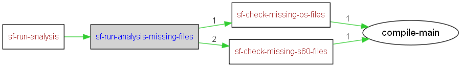

|
Helium API | ||||||
| prev next | frames no frames | ||||||
Location
d:\maintools\sf-config\common\build.postbuild.xml:629:
Conditional execution
Target is run if property defined: sf.spec.splitbuild
TODO: Make this work for package builds once we have sysmodel story worked out
| Name | Edit status |
|---|---|
| User editable properties | |
| Internal properties | |

<target name="sf-run-analysis-missing-files" if="sf.spec.splitbuild">
<!-- splitbuild is only set for Platform builds -->
<if><istrue value="${sf.spec.splitbuild}"/>
<then>
<if><istrue value="${sf.spec.os.skipbuild}"/>
<then><echo message="Skipping OS file check"/></then>
<else><runtarget target="sf-check-missing-os-files"/></else>
</if>
<if><istrue value="${sf.spec.s60.skipbuild}"/>
<then><echo message="Skipping S60 file check"/></then>
<else><runtarget target="sf-check-missing-s60-files"/></else>
</if>
</then>
<else>
<runtarget target="sf-check-missing-os-files"/>
</else>
</if>
</target>
|
Helium API | ||||||
| prev next | frames no frames | ||||||